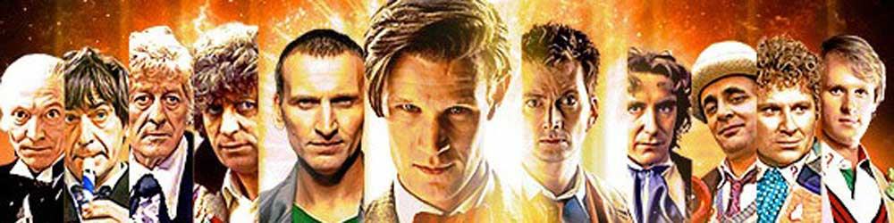
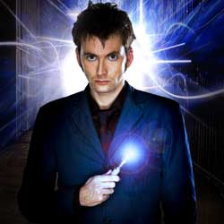

|  |
| Home The Doctors The Companions The Villians Show History |
|
The Tenth DoctorThe Tenth Doctor is an incarnation of the Doctor, the protagonist of the BBC science fiction television programme Doctor Who. He is played by Scottish actor David Tennant in three series as well as nine specials. As with previous incarnations of the Doctor, the character has also appeared in other Doctor Who spin-offs. In the programme's narrative, the Doctor is a centuries-old Time Lord alien from the planet Gallifrey who travels in time in his TARDIS, frequently with companions. When the Doctor is critically injured beyond medical repair, he canregenerate his body; in doing so, his physical appearance and personality change, and a new actor assumes the role. This incarnation's companions include working class shop assistant Rose Tyler (Billie Piper), medical studentMartha Jones (Freema Agyeman), and fiery temp worker Donna Noble (Catherine Tate). He eventually parts ways with them all by the end of the 2008 series finale, "Journey's End", after which he attempts to travel alone for the duration of the 2008–10 specials before being accompanied by Donna Noble's Grandfather, Wilfred Mott on his final adventure in "The End of Time". In November 2013, as part of Doctor Who 's 50th Anniversary celebrations, Tennant's Doctor was voted "The UK's favourite Doctor" in a survey held by the Radio Times magazine. |
|
Ann Marie Skjold Ashly Wilkins |
Content Derived from Wikipedia Doctor Who Page |